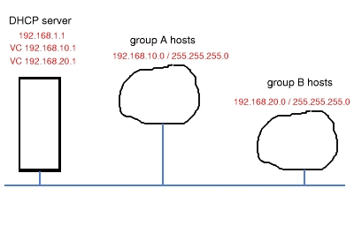
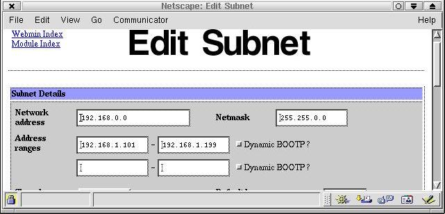
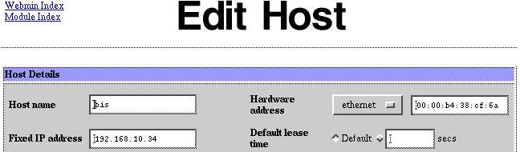
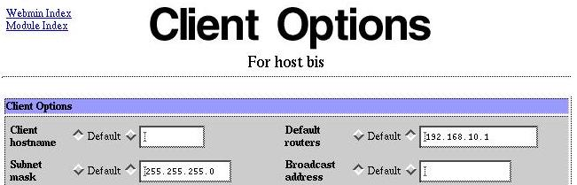
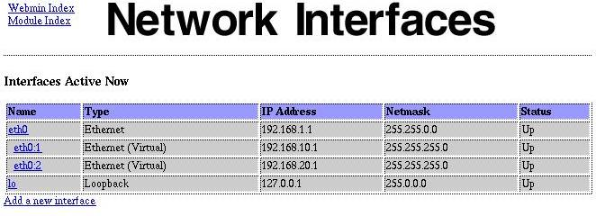

|
Разбиение вашей локальной сети на подсети с
помощью DHCP |
|
Зачем это нужно? С понижением цен на аппаратное обеспечение размеры локальных сетей выросли. Теперь обычным явлением являются локальные сети размером от малого офиса (5-10 хостов) до больших корпоративных сетей, охватывающих целое здание (более 50 хостов). При количестве хостов менее 10-ти управлять сетью, в общем, очень просто: все узлы принадлежат одному Ethernet-сегменту, а безопасность, если она необходима, реализована на уровне хоста: пароль и т.п. При количестве узлов более 50-ти вы уже должны получать финансирование, достаточное для установки управляемого коммутатора с поддержкой виртуальных сетей (VLAN'ов). Тогда бухгалтерия будет работать в одном "вилане", отдел сбыта -- в другом и так далее. Каждый хост будет иметь доступ к хостам из своего вилана и серверам компании, но не к хостам из другого вилана. Кроме безопасности на уровне хоста появляется еще и сетевой уровень безопасности. В сетях среднего размера мы часто вынуждены объединять все узлы в один сегмент. Современные дешевые коммутаторы легко справляются с обработкой трафика 50-ти узлов, но они не поддерживают функции виртуальных сетей. Коммутаторы же с такой функцией на порядок дороже. Хорошо известные брэнды продают их начиная от $1200 за 24-портовый коммутатор. Возможно, он и стоит этих денег, однако он совершенно не вписывается во многие сметы. Например, в мою. DHCP и подсети Одна из локальных сетей, которую я администрировал, была сетью школы, где я работал. Она представляла собой длинную цепочку неуправляемых Ethernet-коммутаторов. Такая архитектура была обусловлена планировкой здания. Мне приходилось управлять трафиком нескольких типов. Для упрощения будем говорить о "преподавательском" (группа А) и "студенческом" (группа Б) трафиках. Они не должны смешиваться. Я не хочу, что бы люди из разных групп имели доступ к принтерам и файлам другой группы (пароли были гораздо проще, чем мне бы хотелось). Простейшим путем разделение на группы является выделение каждой группе своей сети. Например, группа А получит адреса из сети 192.168.10.0 (т.е. 192.168.10.12), тогда как группа Б -- из сети 192.168.20.0 (т.е. 192.168.20.34). Сервера, доступ к которым должен быть открыт для обеих групп, должны иметь адрес в каждой из сетей.  Топология нашей сети Хорошим решением проблемы является сервер DHCP. Это сервис, которым вы пользуетесь при dial-up соединении с Internet: вы соединяетесь с провайдером, который назначает вам временный (а возможно и постоянный. - Прим.пер.) реальный IP адрес. Большинство дистрибутивов Linux, включают в себя сервер DHCP, который можно использовать и в локальной сети. В простейшем случае, вы задаете DHCP-серверу диапазон адресов: например от 192.168.1.100 до 192.168.1.199. Любой хост, который загружается и запрашивает адрес, получит его из указанного диапазона. После отключения хоста адрес освобождается и может быть использован повторно, уже для другого хоста. Все Ethernet-карты, содержат идентификационный номер, который называется MAC-адресом. Это 12-цифровой номер, определяемый производителем, уникальный для всех Ethernet-устройств в мире. Сервер DHCP может быть настроен на использование этого адреса, что бы всегда присваивать одному и тому же хосту один и тот же IP адрес. Пользуясь этим, мы можем создать список MAC-адресов хостов группы А, и настроить DHCP на раздачу им постоянных IP-адресов из подсети 192.168.10.0. А хостам с MAC-адресами группы Б, будут отдаваться адреса из сети 192.168.20.0, хосты не принадлежащие ни одной из групп (лаптопы визитеров, например) получат адрес в подсети 192.168.1.0 . В этом смысле у DHCP есть преимущество над VLAN'ами: "виланы" определяются для физических портов, тогда как DHCP использует адрес карты. При использовании виланов, если вы физически меняете сетевое подключение -- например при переезде из одной комнаты в другую -- вы можете изменить и свой вилан. При использовании DHCP, привязка к подсети останется прежней. Это очень неполное суждение. Вы можете привязать к порту коммутатора MAC-адрес, тогда несанкционированного попадания в другой вилан не будет. Строго говоря, разбиение на подсети (и использование разных адресов сетей) не имеет никакого отношения к безопасности, тогда как одной из функций виланов может быть обеспечение безопасности на сетевом уровне. - Прим.пер. Настройка DHCP В большинстве дистрибутивов сервер DHCP называется dhcpd и запускается стандартными скриптами (теми же что и сервисы httpd, postfix, ...). Он может быть и в виде пакета RPM, например dhcp-3.0-3mdk.i386.rpm. Если он уже установлен в вашей системе, то просмотрите страницы руководства dhcpd и dhcpd.conf. Сначала, чтобы настроить сервис DHCP для основной сети, я использовал утилиту webmin. Обратите внимание, что сервис должен работать в сети 192.168.0.0 с маской 255.255.0.0 . Это связано с тем, что он должен быть доступен из всех подсетей.  Далее, я внес в конфигурацию каждый хост, указывая его имя, аппаратный MAC-адрес и IP-адрес, который я хотел ему выдать. IP-адреса принадлежали подсети 192.168.10.0 (Для группы А, естественно - Прим.пер.).  Если вас интересует, где можно узнать MAC-адрес сетевой карты, то посмотрите на нее внимательно. На большинстве из них есть наклейка, где он указан. Если же на ваших картах наклейки нет, то пока пропустите этот шаг. Заканчивайте настройку DHCP-сервиса, и запускайте хосты один за другим. Поскольку каждый хост получает IP-адрес (в сети 192.168.1.0 пока что), вы увидите его в файле /var/lib/dhcp/dhcpd.leases. Например:
lease 192.168.1.198 {
Учтите, что в файле будут указаны только адреса, полученные динамически, а не те, что вы жестко привязали к хостам. Закончите настройку фиксированных адресов в конфигурации DHCP-сервера. Запустите или перезапустите сервер DHCP. Узлы должны будут получить назначенные им адреса (при запросе от них. Например при загрузке - Прим.пер.) На Linux в этом можно убедится при помощи команды ifconfig. На Windows-машине используйте winipcfg для Win95/98/ME, а ipconfig (в окне команд) для WinNT/2k. Кстати, эти же команды выведут вам и MAC-адрес сетевой карты компьютера. Для команды ipconfig нужно еще задать параметр /all: ipconfig /all - Прим.пер. Маска сети по умолчанию, однако, устанавливается равной 255.255.0.0. Это нехорошо, т.к. хосты подсетей 192.168.10.0 и 192.168.20.0 будут видеть друг друга (попробуйте пинг). Идем в конфигурацию каждого узла и нажимаем "edit client options". Устанавливаем маску подсети 255.255.255.0 и маршрутизатор по умолчанию 192.168.X.1 для подсети 192.168.X.0 . Например, в сети 192.168.10.0:  Не забудьте также установить маску 255.255.255.0 в общей настройке клиентов сети 192.168.0.0. Можно и вручную править файл /etc/dhcpd.conf. Это может быть даже более понятно, чем интерфейс webmin. Вот что вы могли бы указать: # Организация доступа к серверу В предыдущем примере, для каждой подсети вида
192.168.X.0 мы указали маршрутизатор 192.168.X.1 . Но при
этом наш сервер имеет IP-адрес 192.168.1.1 -- и это значит,
что:
Поэтому наш сервер должен иметь дополнительные адреса для каждой из подсетей: 192.168.10.1, 192.168.20.1, и т.д. Это можно сделать очень просто, создавая виртуальные сетевые карты (точнее -- указывая дополнительные адреса сетевой карты - Прим.пер.) eth0:1, eth0:2, и т.д. При помощи webmin:  Все можно настроить и руками. Если у вас дистрибутив Mandrake или Red Hat, нужные файлы расположены в каталоге /etc/sysconfig/network-scripts. У вас уже должен быть файл ifcfg-eth0. Скопируйте его с именем ifcfg-eth0:1, ifcfg-eth0:2, ... и измените в них соответственно адреса и сетевые маски (а так же переменные DEVICE, BROADCAST и NETWORK - Прим.пер.). Например, для eth0:1 : BROADCAST=192.168.10.0 Это, в основном, все, что вам нужно. Возможно, вам нужно будет разрешить маршрутизацию на сервере, например для доступа к Internet. Но будьте аккуратны, при этом нужно будет запретить маршрутизацию между локальными подсетями; 192.168.X.0 не должна видеть 192.168.Y.0 . Чтобы избежать этого, используйте брандмауэр, такой как iptables. Его же можно использовать для блокировки доступа в Internet для тех или иных подсетей или хостов. PS. Для тех, кто захочет перевести эту статью: Я написал ее в духе лицензии GPL, т.е. вы можете (это даже поощряется) копировать, пересылать и переводить ее, только ПОЖАЛУЙСТА, пришлите мне сообщение по электронной почте! Я хочу быть в курсе переводов -- это хорошо для составления учебных планов :-) Пожелание автора, естественно, было выполнено: From: Alan Ward
<award@andorra.ad> Of course! Go ahead with
translation. >I'm going to translate
your article "Subnetting your local network with
DHCP" >Regards, Прим.пер. Copyright (С) 2002, Alan Ward. Copying
license http://www.linuxgazette.com/copying.html |
|
Вернуться на главную страницу |